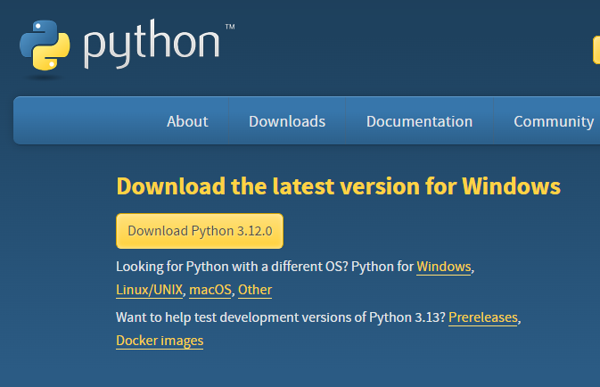
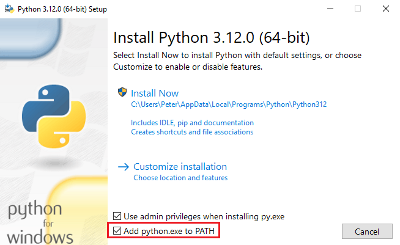
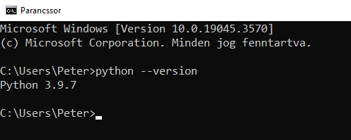
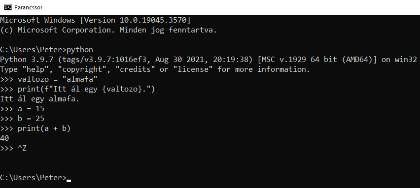
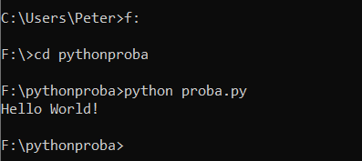

Különböző platformokon tud dolgozni: Windows, Linux, Mac,
Raspberry Pi stb.
Mivel interpretált nyelv, ezért kötelező egy Python
értelmező (interpreter)
telepítése a gépre. Ez megoldható a hivatalos
python.org
honlapról.
A Python kezelhető procedurális módon, objektumorientált
módon és funkcionális módon.
Mivel sokat fogjuk használni, ezért megemlítjük a
print() függvényt, amellyel a
konzolra tudunk írni.
print("A konzolra írunk valamit!")
Python telepítése Windows-ra:
Töltsük le a fenti címről a Pyton interpretert.

Kattintsunk az
Install Now linkre, miután
kipipáltuk a PATH-hoz való hozzáadást. Ezzel mentjük a
környezeti változók közé az interpretert. Enélkül az IDE-k
nem tudnák használni.

Nyissunk meg egy parancssort és gépeljük be:
python --version. Ha a
következőt kapjuk, akkor jól dolgoztunk!

Python REPL:
A parancssorban írjuk be simán a
python szót. Ekkor megnyílik a
Python
REPL (Read, Eval, Print, Loop)
felülete. Itt lehetőségünk van rövid kódokat írni
tesztelésként.
Kilépni a
ctrl + z billentyűkombinációval
vagy az exit() utasítás
beírásával tudunk.

Futtatás:
Miután megírtuk a Python állományunkat például
proba.py, akkor ezt oda kell
adni az interpreternek fordításra és futtatásra. Navigáljunk
el az állományt tartalmazó mappába. Ez a parancssorban a
következőképpen működik. (print("Hello World!")
az állomány tartalma.)

Komolyabb program esetén javasolt inkább egy IDE használata
a sima szövegszerkesztő helyett. Mi a Visual Studio Code-ot
fogjuk használni.